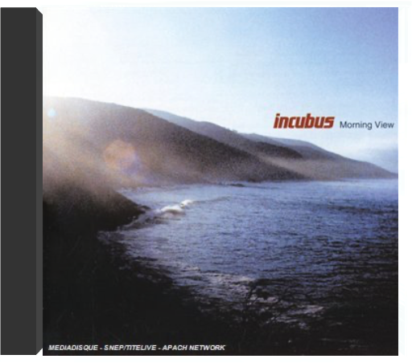
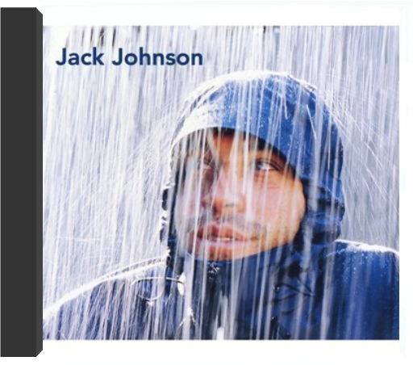

Un rapide coup d'oeil au CV d'Incubus permet de mieux cerner la musique du groupe. Ainsi leur metal a-t-il retenu l'attention de Les Claypool du groupe Primus et Jonathan Davis de Korn : sacrée carte de visite pour qui pratique une fusion qui les associe, côté qualité, aux leaders du genre que sont Rage Against The Machine, Fishbone et Red Hot Chili Peppers ! Prompt à réveiller un mort, Make Yourself est un coup de pied au cul marquant une étape supplémentaire dans l'ascension du groupe. Ouvert aux grooves de l'electronica funkoïde ("Battlestar Scralatchtica") comme à la drum'n'bass, ce disque fait la part belle à la voix de Brandon Boyd portée par d'énormes riffs de guitares métalliques. Décoiffant. — Hervé Comte  morning viewincubus Lentement mais sûrement, Incubus, longtemps affublé de la réductrice étiquette "neo-metal", se fait un nom. Un succès largement mérité, tant le groupe fait preuve de talent et d'originalité. Ses mélodies accrocheuses sont des écrins pour la voix incroyable de Brandon Boyd (qui en plus est assez plaisant à regarder... hors sujet, peut-être, mais tellement vrai !). Mixant joyeusement rock, metal et reggae ou musique asiatique, ce quatrième album du groupe, digne successeur de Make Yourself, ne fait pas exception à la règle. Quitte à prendre le train Incubus en marche, c'est le moment ou jamais ! —Juliette Legouy  C'est là le grand retour d'Incubus après de nombreux déboires qui auraient pourtant pu plomber ce septième album. Outre deux procès, le départ du bassiste Dirk Lance les avaient quelque peu perturbés. Mais ce dernier étant désormais remplacé par l'excellent Ben Kenney, un transfuge de Bubba Sparxxx, Blackalicious et The Roots, Incubus repart de plus belle, avec un détonant mélange de funk et de rock épais au groove hypnotique. De son côté, le chanteur Brandon Boyd n'est pas en reste, dont la voix déchirante évoquera par endroits Mike Patton (Faith No More, Fantômas). De l'ensemble se détachent sans problèmes les percutants "Priceless" et "Pistola". Puissant ! —Hervé Comte |  Last summer, over a span of six days, Incubus celebrated their 20th anniversary as a band by renting out a gallery in downtown Los Angeles to perform and connect with their fans in the most intimate of settings. The band documented this unique experience on high-quality video and stunning audio, making up the much-anticipated release, INCUBUS HQ LIVE.  2017 release from Californian alt-rock blokes...album #8 as it turns out. Includes 'Nimble Bastard' & 'Familiar Faces'.  brushfire fairytalesjack johnson Tout de suite on pense à Ben Harper. Ce doit être le soleil qui leur fait ça... Qui les rend cool, leur donne ce sourire dans leur musique. Car celle de Jack Johnson a ce côté décontracté, en même temps nostalgique, d'une époque insouciante où les lendemains chantaient encore. Ben Harper est d'ailleurs un invité de passage sur ce premier album, signé d'un chanteur précédemment tourné vers le cinéma. On pourra le trouver bluesy, funky ou tout simplement relâché, cet album vous sourit et vous masse la nuque, comme des vagues qui lèchent le sable. C'est sur celui de son île de Hawaï que Jack Johnson a composé la plupart des chansons de "Bushfire Fairytales". D'où sans doute cette tranquillité apaisante qui en émane, celle du surfeur qui attend son heure. Le surfeur qu'il fut d'abord invente ici une surf music ultra-cool, fille spirituelle de Jimmy Buffet des années 70. Reposant. —José Ruiz |

Julien
Collection Total:
2 053 Items
2 053 Items
Last Updated:
May 23, 2024
May 23, 2024


 Made with Delicious Library
Made with Delicious Library